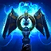

Campeon:

Minions: 180
Oro: 2000
Objetos: 4

Coste: 40
Salta hacia un enemigo, causando daño físico a los enemigos cercanos y ralentizándolos durante 2 segundos.

Coste: 50
Incrementa la velocidad de ataque durante unos segundos.

Coste: 55
Empuja a un enemigo, infligiéndole daño.
Ultimate
Coste: 100
Transforma su martillo en cañón o viceversa, cambiando su conjunto de habilidades.

Destello
Prender
Daño de ataque: 150
Daño mágico: 0
Defensa: 90
Velocidad de ataque: 0.82
Velocidad de movimiento: 335
Omnisucción: 0